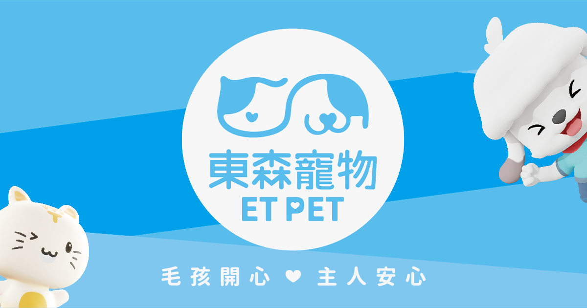

2023 校園公關提案競賽
你是我的羊
以飼主需求與寵物友善生活為核心，提出結合教育、健康診斷、實體活動與社群擴散的整合公關企劃。
專案背景
寵物經濟持續成長，但飼主教育、寵物照護與環境責任仍有溝通缺口。企劃從飼主的實際需求出發，希望讓品牌成為可購物、可學習，也能建立更好人寵關係的平台。
洞察與挑戰
透過社群話題、產業資料與實地訪查，整理出飼主對寵物行為訓練、健康照護與友善出遊的需求；同時發現品牌可加強後續溝通與永續觀念的推廣。
策略
以「用心聽見寵物的聲音」與「與寵物共創美好生活」為溝通主軸，將抽象的照護與永續概念，轉譯成飼主能理解、可以親身參與的活動。
活動規劃
寵物行為訓練以 MBTI 話題設計寵物行為訓練課程，將社群共鳴導向正確照護知識。
營養需求診斷結合醫療資源，協助飼主理解寵物食量與營養需求，減少浪費。
友善咖啡廳巡禮串聯寵物友善店家、社群打卡與創作者合作，擴大活動參與與品牌連結。
預期效益
本案為競賽提案，以下為企劃設定的預期目標，並非實際執行成果。
課程活動1,000預期參與人次
診斷活動1,000預期參與人次
巡禮打卡50+預期社群貼文
影片點擊2,500預期觀看次數
企劃觀點
議題型公關不能只停留在口號。當品牌將教育、服務與社群參與設計成具體接觸點，才能把關懷轉化為飼主真正願意採取的行動。
查看完整企劃書